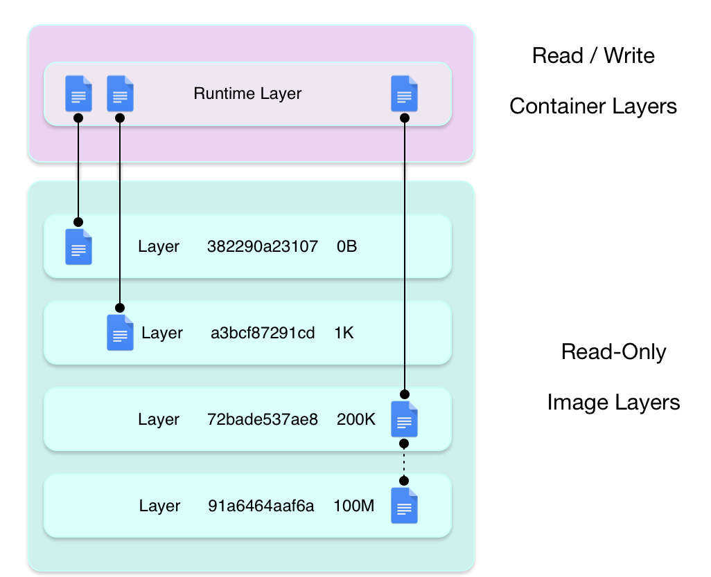
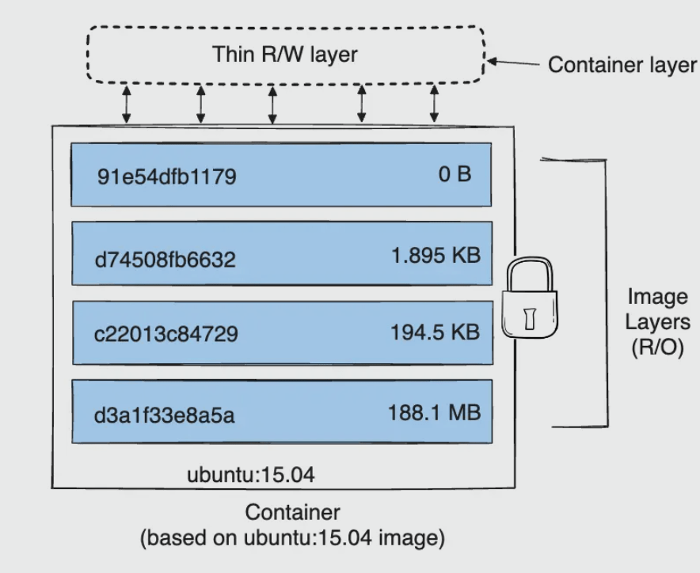

Docker 与存储
写在前面的话
容器的默认状态难以从容器中搬运出来。
容器的默认状态是基于联合文件系统的，也就是需要存储驱动的支持，效率会比直接写到宿主机文件系统里要差一点。
所以此处 storage driver，就正对应 network driver 了。
把数据写入到宿主机上的方法有：volumes 和 bind mounts。如果在 linux 上，还有 tmpfs mount。注意，这些东西不是 storage driver。
他们之间的关系是：
在操作系统和 docker 层面，可以认为 volumes 是有实际存储的设备（虽然被虚拟化）的抽象（在 k8s 抽象里是 volumeMounts），而 mount 是带有 path 的一个挂载点（在 k8s 抽象里是 mountPath）。
Volumes
在宿主机文件系统上，Volumes 使用一块专属的路径来存储 docker 文件，如/var/lib/docker/volumes/，其他进程不应该碰这些文件。
Volumes 是 Docker 持久化数据最佳的选择。
常见创造数据卷的方法
只能迟至容器创建时把一个数据卷和容器关联起来。
docker volume create。- 容器/服务创建时，使用
-v/--mount参数
也就是说，不能追加在容器里创建数据卷。
有数据共享需求，可以考虑使用docker cp（一次性从一个容器复制数据到另一个容器）一类的命令来解决。
数据共享
多个容器可以通过共享数据卷的方式来共享数据。即使所有的容器都不在使用卷了，卷对于 docker 进程而言依然是活跃的，除非使用docker volume prune命令来打扫卷。也就是说，卷的生命周期，和容器的生命周期是互不干涉的。
命名与匿名
当创造卷的时候，卷可以是命名的，也可以是匿名的。匿名的卷只是没有显式地被命名，但 docker 本身还是会给它起一个随机名字（类似容器）。
远程存储数据
卷允许使用卷驱动（volume driver，不是 storage driver），这样我们可以在远程文件系统，或者云系统上存储数据。
常用命令
创建容器的时候创建卷，新用户应该使用 mount 选项而不是使用v 选项。
1 | |
如果是创建容器的时候，容器内部的目录已经有数据，而绑定一个 volume 进去，则会自动把内部容器的数据拷贝到 volume 里面。
bind mounts
可以让数据在宿主机文件系统中的所有部分读写，也可以让其它进程修改。它是 docker 早期就存在的技术。
bind mounts 在宿主机上的路径并不被要求早已存在，它会在需要的时候被创建出来，也就是所谓的pre-populate data。当然这也要求宿主机有一些特定的目录结构存在，如果这个目录结构不存在，那么还是要回来寻求 volume 的帮助，因为 volume 使用的路径完全可以被 docker 守护进程把控。
额外的副作用
docker 容器有完全地修改 bind mount 内文件内容的权限。所以如果宿主机里有什么敏感文件的话，不要放在这里面，否则会产生安全隐患。这也是为什么推荐使用 volumes 的原因。
常见命令
1 | |
volume vs bind mount
- 如果只是简单地想在把容器的状态持久化到宿主机上，应该直接使用数据卷，这样新的容器也能继承老容器的状态。更抽象地说，如果需要在容器和容器之间转移状态，可以使用数据卷。
- 如果只是要备份数据，可以考虑停下容器，把数据卷里的内容拷贝出来。
- 数据卷在不同的宿主系统上是通用的。
- 如果想进一步在宿主机和容器之间共享状态，那么可以考虑使用 bind mount。比如从宿主机来读容器的数据。
- 可以认为 volume 生命周期是 docker 来管理，进入隐藏路径（cd /var/lib/docker/volumes/your_volume_name/_data）来读原始数据。
- 所以 volume 是为了数据隔离，而 bind mount 是为了数据共享设计的。
tmpfs mounts
这个是在内存里面做 bind mounts。所以本质上是不持久化的。
存储驱动（storage driver）相关
分层架构
存储驱动总是基于联合文件系统，其基本架构如图：


可以看到，多个容器之所以能够基于一个镜像诞生，是因为镜像的层次是 RO 的，而每个容器的 RW layer 是彼此独立的。
如果有跨镜像的同份数据共享，请使用 volume。
大小计算
使用 docker ps -s 命令，我们可以看到两个 size：
- size。容器的可写层在磁盘上的数据大小。
- virtual size。镜像的只读数据加上 size 的大小。
其他更细致的计算请查看《Container size on disk》。
docker 除了 layer 以外，还有其他消耗磁盘的地方。比如写日志，有专门的日志驱动，这需要另外计算大小。
COW 问题
为了最大效率地（for maximum efficiency）利用磁盘，跨层之间是使用 COW（Copy On Write）策略来利用文件的。也就是说，当上层（包括可写层在内）的层要使用下层的文件，应该先直接访问，在有需要修改的需求时，才将该文件拷贝一份放到本层里。
通常，应该让容器自己的 writable layer 变得非常薄-所谓的 thin rw layer。
层次存储的位置
通常在目录/var/lib/docker/下，例如：
1 | |
常见的存储驱动
- aufs
- overlay
- overlay2
- btrfs
- ZFS
- others
docker 选择驱动的优先级列表：
btrfs/zfs -> overlay2 -> overlay -> aufs/devicemapper
在当代，默认的存储驱动总是 overlay2，而以前则是 aufs。
选择存储驱动要考虑的因素主要有：
- 是否零配置。
- 操作系统是否支持。
- 稳定性。
临时存储层
我们启动一个没有使用数据卷或者 bindmount 的容器，持续往里面的某个路径写东西，是不是一直都往联合文件系统的临时存储层写东西-只要我们使用打包命令，就可以把这种持续写的东西固化为下一个镜像的一部分？
当容器 未使用 Volume 或 Bind Mount 时，所有写入容器内部文件系统的数据（如日志、临时文件）会存储在联合文件系统（UnionFS）的容器读写层（即临时存储层）。
特点：
- 数据仅存在于当前容器的生命周期内。
- 停止或删除容器后，这些数据会丢失（除非显式提交为镜像）。
镜像打包：docker commit 本质是将读写层转换为只读层，并入镜像层栈。
docker 容器有几种状态
| 状态 | 触发操作 | 说明 |
|---|---|---|
| Created | docker create |
容器已创建但未启动（仅初始化文件系统层） |
| Running | docker start / docker run |
容器正在运行，进程处于活动状态 |
| Paused | docker pause |
容器进程被暂停（CPU 暂停，内存保留） |
| Stopped | docker stop |
容器进程正常终止（发送 SIGTERM，等待优雅退出） |
| Exited | 进程结束 / docker kill |
容器进程强制终止（SIGKILL）或自行退出（退出码非0） |
| Restarting | docker restart |
容器正在重启（先停止再启动） |
在这里如果写入 thin RW layer，则如果执行 docker rm 删除容器会销毁这个存储层-生命周期跟着容器。
1 | |
stop 和 pause 本质上有什么区别？
docker stop（停止容器）
- 行为：向容器内主进程发送 SIGTERM（可捕获的信号），等待进程优雅退出（默认 10 秒超时），超时后强制发送 SIGKILL。
- 效果：
- 容器状态变为 Exited，进程完全终止。
- 释放所有资源（CPU、内存、PID 等）。
- 保留文件系统：容器的读写层（UnionFS）仍然存在，数据未丢失（除非删除容器）。
- 适用场景：需要彻底终止容器进程（如版本更新、资源回收）。
1 | |
docker pause（暂停容器）
-
行为：通过 Linux cgroup freezer 机制冻结容器内所有进程，暂停 CPU 和内存操作，但保留进程状态。
-
效果：
- 容器状态变为 Paused，进程被挂起（类似“冻结”）。
- 不释放资源：内存占用保留，文件句柄、网络连接等均保持原状。
- 快速恢复：解冻后进程从冻结点继续运行，无启动开销。
-
适用场景：临时暂停容器以节省 CPU 资源（如调试问题、负载高峰时降级）。
核心区别对比
1 | |
| 特性 | docker stop |
docker pause |
|---|---|---|
| 进程状态 | 完全终止 | 冻结（暂停） |
| 资源释放 | 释放 CPU、内存、PID 等 | 仅释放 CPU，内存保留 |
| 数据持久性 | 读写层保留（需手动删除容器） | 所有状态（包括内存）保留 |
| 恢复速度 | 慢（需重新启动进程） | 快（从冻结点即时恢复） |
| 信号处理 | 触发 SIGTERM/SIGKILL | 无信号，直接冻结 |
- stop 的典型用途：
- 容器需要升级时，先停止旧容器再启动新版本。
- 长期不用的容器，停止以释放资源。
- pause 的典型用途：
- 临时“静默”一个容器以检查其日志或文件系统快照。
- 负载均衡时短暂暂停非关键容器，优先保障核心服务。
stop 的进程再次 start，是再次从 entrypoint 开始么？
- 默认行为：从原有进程继续
- 如果容器是正常 stop 的（未删除）：docker start 会重新启动容器内 原来的进程（包括 ENTRYPOINT 或 CMD 定义的命令），但 不会重新初始化文件系统。
- 已写入的文件（如日志）会保留（因为容器读写层未销毁）。
- 进程会从上次停止时的状态继续执行（除非进程本身设计为退出后终止）。
- 如果容器是正常 stop 的（未删除）：docker start 会重新启动容器内 原来的进程（包括 ENTRYPOINT 或 CMD 定义的命令），但 不会重新初始化文件系统。
- 特殊情况：从 ENTRYPOINT 重新开始
- 以下情况会导致 start 时重新执行 ENTRYPOINT：
- 进程已退出：
- 如果 ENTRYPOINT/CMD 进程在容器停止前 自行退出（如单次任务），start 会重新运行它。
例如：docker run --name job alpine echo "done"这种一次性任务。
- 以下情况会导致 start 时重新执行 ENTRYPOINT：
那么 unpause 的执行原理是什么？
| 操作 | 原理 | 进程状态 | 资源释放 | 恢复速度 |
|---|---|---|---|---|
| unpause | cgroup thaw | 从冻结点继续 | 不释放 | 极快 |
| start | 重新启动进程 | 从 ENTRYPOINT 开始 | 部分释放 | 慢 |
| restart | 先 stop 再 start | 全新进程 | 完全释放 | 最慢 |
docker unpause的本质是通过 cgroup 解冻指令 恢复进程执行，属于内核级操作，完全透明且高效。与 stop/start 相比，它保留了完整的运行时状态，适合需要临时冻结的场景。
docker log 到底在读什么？
-
日志捕获范围：Docker 会自动捕获容器内 所有输出到 stdout 和 stderr 的内容（包括 echo、print、应用程序日志等），无论这些输出是来自 ENTRYPOINT、CMD 还是容器内运行的脚本。
-
外部读取方式：直接使用以下命令即可查看：
1 | |
以下情况可能导致docker logs无法读取日志：
- 自定义日志驱动：如果容器启动时指定了非默认日志驱动（如
--log-driver=none或--log-driver=syslog），则docker logs会失效。需通过对应日志系统查看。
1 | |
- 直接写入文件：如果容器内进程将日志直接写入文件（如 /app/log.txt），而非输出到 stdout/stderr，则必须通过以下方式查看：
1 | |
日志驱动
-
默认日志驱动（json-file）：Docker 默认将容器的 stdout/stderr 输出通过 日志驱动（logging driver） 捕获，存储到宿主机的文件中（通常位于 /var/lib/docker/containers/<容器ID>/<容器ID>-json.log）。
- 外部读取：通过 docker logs 命令可直接从该文件读取日志（无需进入容器）。
- 日志轮转：默认配置下，日志文件会持续增长，但 Docker 会通过 日志轮转（log rotation） 限制单个文件大小和数量（默认每个容器最多 5 个日志文件，每个不超过 10MB）。
-
其他日志驱动：如果配置了 syslog、fluentd 等第三方驱动，日志会直接发送到外部系统，不存储在宿主机本地。
日志容量
默认限制：Docker 通过以下参数控制日志文件大小（需在 daemon.json 或容器启动时配置）：
1 | |
- 当日志文件达到 max-size 时，Docker 会 自动轮转（旧文件重命名，新文件创建）。
- 当文件数量超过 max-file 时，最旧的日志文件会被删除，避免无限占用磁盘空间。
- 无配置时的风险：如果未配置日志轮转，且容器持续输出日志，宿主机磁盘可能被写满（尤其是高频日志场景。
| 问题 | 答案 |
|---|---|
| 外部能否直接读日志？ | ✅ 能，通过docker logs或直接查看宿主机日志文件 |
| 日志是否无限增长？ | ❌ 否，默认有轮转机制（可配置大小和数量），超出限制后旧文件会被自动清理 |
| 日志是否写入容器内 tmp？ | ❌ 否，日志存储在宿主机，与容器内的文件系统无关 |